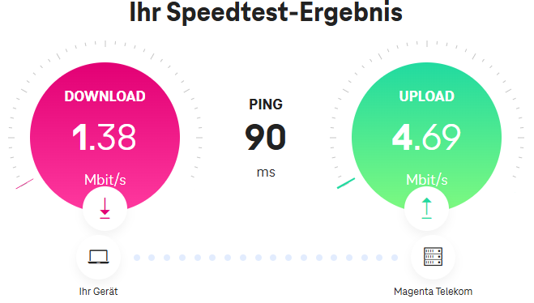

Hi! Am besten meldest du dich dazu bei der Technik Hotline unter: 0676 200 7777 oder im Chat
Dort hilft die das Service Team sicher gerne weiter!
LG

Liebe Magenta-Mitarbeiter,
ich hoffe ihr könnt mir (und vmtl. vielen weiteren Kunden in meiner Umgebung) bei folgendem Problem helfen:
Ich habe den Tarif Mobile Sim Only Unlimited.
Mein Handy ist im Masten 127dc0c (Dec: 19389452) registriert.
Technologie: 5G NSA
Bänder: B3(20MHz) + B20(10MHz) + B1(15MHz) + B8(10MHz) + n78(20MHz)
Am Standort mit dem besten 5G-Empfang (wo ich immer am gleichen Standort teste) habe ich im n78-Band RSRP: -77dBm und SINR: 21dB
Also sehr guten Empfang.
Ich habe eigentlich tagsüber bis ca. 17:00 Uhr und auch nachts nach 22:00 Uhr perfekte Download-Werte um die 350Mbit/s und auch die Upload-Werte erreichen die beworbenen 50Mbit/s.
Jedoch ab ca. 17:00 Uhr bricht die Download- und die Uploadgeschwindigkeit extrem ein.
Ich weiß, dass zu diesen Zeiten die Netze am stärksten belastet sind, jedoch sind die getesteten Geschwindigkeiten so niedrig, dass teilweise normale Webseiten sehr lange laden. Video-schauen ist nur noch am Ruckeln - dies erscheint mir nicht normal.
Ich habe heute mal regelmäßig Speedtests bei verschiedenen Providern gemacht, es zeigen alle ungefähr das selbe an, euer Magenta-Speedtest ist von den Werten her noch der beste, wsl. weil der Server am direktesten angebunden ist:

Oftmals geht der Speed auch unter 1 Mbit/s und es brechen auch immer wieder mal Verbindungen ab.
Ich könnte mir vorstellen, dass diese niedrigen Werte nicht normal sind, auch dann nicht, wenn der Funkmasten gerade sehr ausgelastet ist.
Immerhin ist mein Tarif in der LTE-Verwendungsgruppe "C" und 5G-Kategorie "Mobil". Sollten also die "Stationär" kategorisierten 5G-Nutzer ein Fünftel meiner Geschwindigkeit erhalten, so dürfen sie sich mit 200kbit/s begnügen... da sind wir dann bald wieder bei Modem-Geschwindigkeiten.
Auch fällt mir auf, dass auch der Upload auf sehr niedrige Werte einbricht. Meistens ist der Upload jedoch nicht betroffen von den durch hohe Auslastungen verursachten Geschwindigkeitseinbußen. Deswegen mein Anliegen:
Liebe Magenta-Techniker: Könnt ihr euch den Masten "127dc0c" bitte mal anschauen, vielleicht gibts da irgendein Problem.
Bitte um Rückmeldung, vielen Dank!
Hi! Am besten meldest du dich dazu bei der Technik Hotline unter: 0676 200 7777 oder im Chat
Dort hilft die das Service Team sicher gerne weiter!
LG

Das habe ich versucht, aber leider ohne Erfolg, weil die Hotline-Mitarbeiter halt First Level Support sind und oft schon aussteigen, wenn ich beginne von 5G-Bändern zu sprechen. Dann versuchen Sie mit Standard-Aussagen abzuwinken, wie man es eh von allen Providern gewohnt ist. Das ist prinzipiell auch verständlich, weil viele wirklich nichts mit EDV am Hut haben und die Hotline diesen Menschen mit ihren Problemen sehr gut weiterhelfen kann. Wenn das Anliegen aber fundiert technisch wird, ist diese meiner Erfahrung nach die falsche Anlaufstelle.
Deswegen hoffe ich lieber hier auf eine Antwort und dass sich ein Techniker der Sache annimmt.
Mit dem Forum hatte ich bei anderen Providern auch schon mehr Erfolg als mit der Hotline.
Was auf den ersten Blick auffällt, sind die 20 MHz im n78.
Aber dies wäre im Standby ohne Last nicht ungewöhnlich.
Wird eine größere MHz fürs n78 Zahl angezeigt, wenn ein Download läuft?
Ansonsten sieht es nach einer Überlastung aus. Ob die Überlastung der Luftschnittstelle zwischen dem Sendemasten und dem Router liegt oder am Backhaul des Sendemasten wird nur Magenta wissen.
DSL sollte in der Gegend zumindest teilweise mit guter Geschwindigkeit verfügbar sein. Zwar keine so hohen Spitzen-Datenraten wie bei 5G, aber dafür auch kein so tiefer Fall. Teilweise ist aber wohl auch warten auf den geförderten FTTH-Ausbau angesagt.
Am 1.12.2024 um 21:08 schrieb lichtimc:Mein Handy ist im Masten 127dc0c (Dec: 19389452) registriert.
Dies ist die Cell-ID einer bestimmten Physical Cell welche vom Sendemast in östliche Richtung zeigt.
Die eNodeB-ID, die ID des gesamten Sendemasts, erhältst du indem du die letzten beiden Stellen einer in diesem Hexadezimalformat vorliegenden Cell-ID entfernst. In diesem Fall also 127DC in Hexadezimal und als Dezimalzahl 75740.
Oder wenn eine konkrete Cell-ID nur als Dezimalzahl vorliegt durch 256 dividieren und auf eine natürliche Zahl kürzen.
Am 2.12.2024 um 20:12 schrieb lichtimc:Deswegen hoffe ich lieber hier auf eine Antwort und dass sich ein Techniker der Sache annimmt.
Mit dem Forum hatte ich bei anderen Providern auch schon mehr Erfolg als mit der Hotline.
Support in dieser Form wird hier nicht (mehr) angeboten.
Am 2.12.2024 um 22:59 schrieb NTM:Wird eine größere MHz fürs n78 Zahl angezeigt, wenn ein Download läuft?
Nein, die bleibt konstant, auch wenn ich, so wie aktuell, mit den maximalen 350Mbit/s downloade. Ich würde aber nicht ausschließen, dass es sich dabei um einen Anzeigefehler der App handelt.
Am 2.12.2024 um 22:59 schrieb NTM:Ob die Überlastung der Luftschnittstelle zwischen dem Sendemasten und dem Router liegt oder am Backhaul des Sendemasten wird nur Magenta wissen.
Wenn es eine Überlastung der Luftschnittstelle wäre, würde sich doch zumindest der SINR ändern, oder irre ich mich da?
Am 2.12.2024 um 22:59 schrieb NTM:DSL sollte in der Gegend zumindest teilweise mit guter Geschwindigkeit verfügbar sein. Zwar keine so hohen Spitzen-Datenraten wie bei 5G, aber dafür auch kein so tiefer Fall. Teilweise ist aber wohl auch warten auf den geförderten FTTH-Ausbau angesagt.
DSL ist bei mir mit maximal 16Mbit/s begrenzt und schwankt stark in der maximalen Bandbreite mit der dynamischen Anpassung. Bei fix eingestellter Bandbreite ist nur ein noch viel geringerer Wert möglich.
Jedenfalls kommt es beim Bonding dann zu Problemen wegen der wechselnden DSL-Geschwindigkeit, weil das Modem dadurch nicht so gut steuern kann, wann das mobile Internet zugeschalten wird.
Am 2.12.2024 um 22:59 schrieb NTM:Dies ist die Cell-ID einer bestimmten Physical Cell welche vom Sendemast in östliche Richtung zeigt.
Das ist sehr interessant, danke für die Info!
Gibt es irgendeine Datenbank mit den eNodeB-IDs + Standort des Mastens?
0A,0B,0C,0D würde dann bedeuten: Westen, Norden, Osten, Süden ?
Am 2.12.2024 um 22:59 schrieb NTM:Support in dieser Form wird hier nicht (mehr) angeboten.
Das ist auch bei allen Providern der Fall, dass das nicht offiziell angeboten wird. Trotzdem waren Techniker (mich eingeschlossen) schon mehr als einmal dankbar dafür, dass ein Problem über das Community-Forum aufgezeigt wurde...
Bearbeitet von lichtimcEs stimmt
Es stimmt alles... Die Empfangswerte sind sehr gut. SINR geradezu perfekt.
Da liegt alles m.M. nach beim Sender und dessen Anbindung - die ist überlastet und da kannst du beim Handy so mal nichts machen.
Zeigt ja auch klar, dass es sonst immer gut funktioniert. 4G oder 5G ist immer das gleiche - iwann sind die Sender ausgebucht und dann geht nix mehr.
Da würde ich wirklich über zumindest DSL nachdenken und prüfen, was bei dir möglich ist, denn da hast du dann auch in der PrimeTime volle Performance.
Das komische ist, dass ich keinen Übergang zwischen Vollgas und Schneckentempo bemerke.
Es kann es sein, dass die Geschwindigkeit wie gewohnt ist und dann plötzlich auf 1Mbit/s fällt. Das schwankt dann auch nicht so, wie ich es bisher bei anderen Anbietern und Funkmasten gewohnt war. Dort war es mal besser, mal schlechter.
Hier ist die Schwankungsbreite maximal zwischen 0.5 und 2 Mbit/s. Und wie geschrieben: Der Upload ist dann extrem niedrig, das war auch noch nie so, die Leute streamen und beginnen nicht wie wild Dateien hochzuladen...
😂
Das war bisher eigentlich immer ein super Indikator für mich, dass der Masten ausgelastet ist, wenn der Download langsam, der Upload aber wie gewohnt war.
Aktuell habe ich übrigens noch über 200Mbit/s und vollen Upload (50Mbit/s). Komisch, aber freut mich, vielleicht bleibts ja so! 😊
Was ich empfehlen kann ist im Kleingedruckten deines Vertrages deine genaue Verwendungsgruppe heraussuchen.
Weil wenn alle um dich herum anfangen YouTube und Netflix in einer höheren Verwendungsgruppe schauen, geht die die zur Verfügung stehende Bandbreite rapide nach unten: https://www.magenta.at/internet/bandbreitenoptimierung
Und je nachdem wie viel du verbrauchst kann es evt. Sinn machen von einem Unlimited Vertrag auf einen mit begrenzter Datenmenge, aber höherer Verwendungsgruppe umzusteigen.
Bearbeitet von atrawogAm 1.12.2024 um 21:08 schrieb lichtimc:Immerhin ist mein Tarif in der LTE-Verwendungsgruppe "C" und 5G-Kategorie "Mobil". Sollten also die "Stationär" kategorisierten 5G-Nutzer ein Fünftel meiner Geschwindigkeit erhalten, so dürfen sie sich mit 200kbit/s begnügen... da sind wir dann bald wieder bei Modem-Geschwindigkeiten.